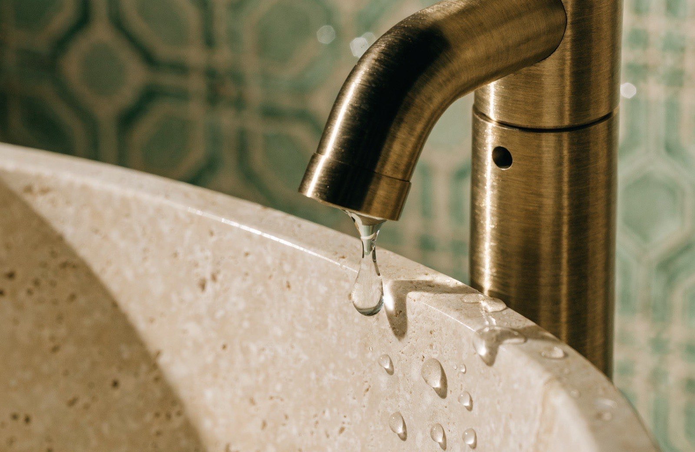
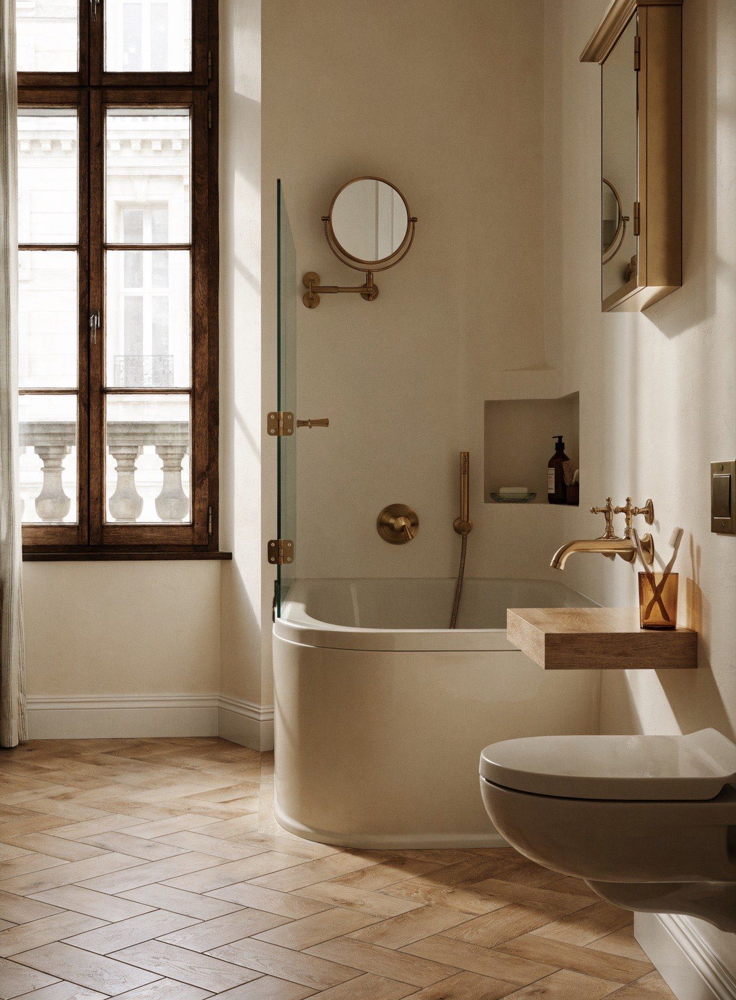
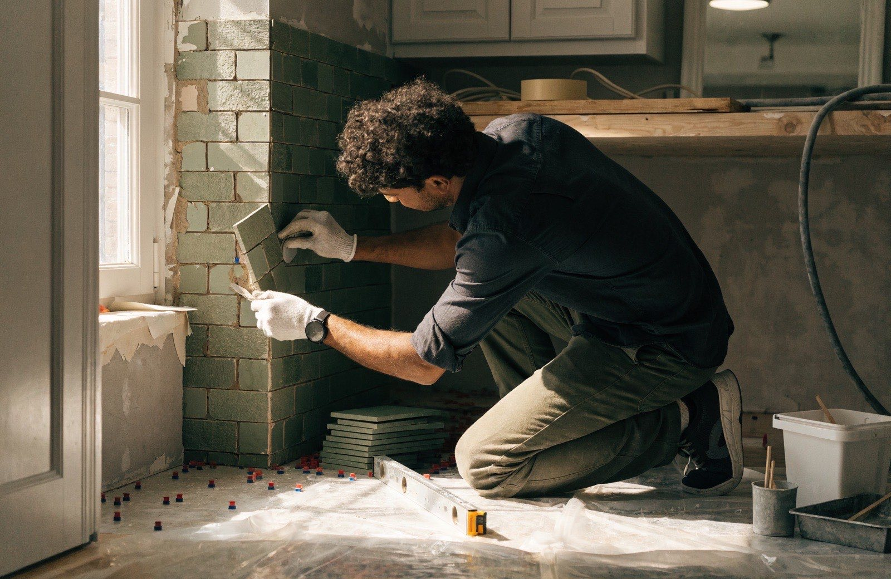

Rénovation de salle de bain clé en main, du sol au plafond
Démolition, plomberie, étanchéité, carrelage, sanitaires, meubles et éclairage : Allo Sanitaire Express prend en charge l'intégralité de votre projet en Seine-Saint-Denis et en Île-de-France. Visite gratuite, devis ferme sous 24h, chantier garanti 10 ans.

Un seul interlocuteur, une salle de bain livrée prête à vivre
Rénover une salle de bain, c'est coordonner cinq métiers : plombier, carreleur, électricien, agenceur, peintre. Chez Allo Sanitaire Express, tout est piloté par un seul conducteur de travaux, avec nos propres équipes salariées. Vous validez le projet, nous nous occupons du reste — de la dépose de l'ancienne salle de bain jusqu'au dernier joint de silicone.
Notre particularité : nous venons du dépannage sanitaire et de l'assainissement. Avant de poser le moindre carreau, nous contrôlons vos évacuations, vos arrivées d'eau et l'état de la plomberie encastrée. C'est la garantie d'une salle de bain belle et saine, sans mauvaise surprise dans deux ans.
- Visite technique gratuite et devis ferme sous 24h, poste par poste
- Chantier mené en continu : 10 à 15 jours ouvrés pour une salle de bain complète
- Matériaux de marques reconnues (Grohe, Geberit, Jacob Delafon…)
- Garantie décennale sur la plomberie, l'étanchéité et le carrelage
Envie d'une douche italienne à la place de la baignoire, d'un WC suspendu ou d'une salle de bain adaptée aux seniors ? Chaque projet est conçu sur mesure, selon votre surface et votre budget.
Parler de mon projetUne rénovation complète, sans poste caché
Notre devis clé en main couvre l'ensemble des travaux, de la démolition à la peinture. Aucun supplément découvert en cours de chantier : le prix annoncé est le prix payé.
Démolition & dépose
Dépose de l'ancienne baignoire, des sanitaires et du carrelage, protection des sols et évacuation des gravats en décharge agréée.
Plomberie & évacuations
Reprise des arrivées d'eau, création ou déplacement des évacuations, contrôle des pentes : notre cœur de métier historique.
Étanchéité
Natte d'étanchéité sous carrelage, système de protection à l'eau sous carrelage (SPEC) dans les zones de douche : zéro infiltration.
Carrelage & faïence
Pose de carrelage au sol et de faïence murale, grands formats, zellige ou chevrons : des finitions dignes d'un carreleur de métier.
Sanitaires
Douche ou baignoire, vasque, robinetterie, WC : fourniture et pose de sanitaires de marques reconnues, choisis avec vous.
Meubles & rangements
Meuble vasque suspendu, colonne, miroir avec éclairage intégré, niches carrelées : chaque centimètre est optimisé.
Éclairage & VMC
Spots étanches, appliques, mise aux normes électriques de la pièce d'eau et ventilation (VMC) pour un air sain sans condensation.
Peinture & finitions
Peinture spéciale pièces humides au plafond et sur les murs libres, joints silicone, pose des accessoires. Livraison chantier nettoyé.
Combien coûte une rénovation de salle de bain ?
Des fourchettes claires pour vous situer avant même la visite. Le devis final dépend de la surface, de l'état de la plomberie et des matériaux choisis.
| Projet | Prestation incluse | Prix indicatif TTC |
|---|---|---|
| Salle d'eau 3 à 4 m² | Démolition, plomberie, étanchéité, carrelage, douche, meuble vasque | 4 500 – 6 500 € |
| Salle de bain 5 à 7 m² | Rénovation complète clé en main, baignoire ou douche, meubles, éclairage | 6 500 – 9 500 € |
| Remplacement baignoire → douche | Dépose baignoire, receveur extra-plat ou plain-pied, paroi, faïence | 3 500 – 6 000 € |
| Salle de bain haut de gamme | Matériaux premium (zellige, pierre naturelle, robinetterie laiton), agencement sur mesure | Sur devis |
Prix indicatifs TTC, fournitures et pose comprises. Devis ferme et détaillé après visite technique gratuite à domicile — le prix annoncé est le prix payé.
Votre salle de bain neuve en 4 étapes
Votre demande en 1 minute
Formulaire en ligne ou appel au 07 66 32 57 13. Un conseiller vous rappelle sous 2h ouvrées pour cerner votre projet et votre budget.
Visite & devis ferme sous 24h
Un technicien se déplace gratuitement, mesure la pièce, contrôle plomberie et évacuations, puis chiffre chaque poste. Prix ferme.
Travaux en continu
Fournitures commandées, date fixée ensemble : nos équipes enchaînent démolition, plomberie, carrelage et finitions sans interruption.
Réception & garanties
Visite de réception à vos côtés, dossier photos avant/après remis, garantie décennale activée. Vous n'avez plus qu'à profiter.
Des finitions qui font la différence



Recevez votre estimation sous 24h
Votre étude gratuite en 1 minute
Décrivez votre projet : un conseiller vous rappelle sous 2h ouvrées avec une première estimation.
Rénovation de salle de bain : vos questions
Combien de temps dure une rénovation complète de salle de bain ?
Comptez 10 à 15 jours ouvrés pour une salle de bain de 4 à 7 m² rénovée de A à Z, et environ une semaine pour une petite salle d'eau. Nos équipes travaillent en continu, sans interruption entre les corps de métier : le planning annoncé au devis est tenu, et vous suivez l'avancement grâce aux photos envoyées à chaque étape clé.
Peut-on habiter le logement pendant les travaux ?
Oui, dans la grande majorité des cas. Nous protégeons les circulations, confinons la zone de chantier et nettoyons chaque soir. L'eau est coupée uniquement pendant les phases de plomberie, sur des créneaux annoncés à l'avance. Si vous n'avez qu'une seule salle de bain, nous organisons le chantier pour réduire au maximum la période sans point d'eau.
Qui choisit les matériaux, le carrelage et les sanitaires ?
Vous, avec nos conseils. Après la visite technique, nous vous proposons une sélection de carrelages, faïences, meubles et robinetteries adaptée à votre budget, issue de marques reconnues (Grohe, Geberit, Jacob Delafon…). Vous pouvez aussi fournir vos propres matériaux : nous validons simplement leur compatibilité technique avant la pose.
Quelles garanties couvrent les travaux ?
L'ensemble du chantier est couvert par notre garantie décennale : plomberie, étanchéité, carrelage et installations sanitaires. S'y ajoutent la garantie de parfait achèvement (1 an) et les garanties fabricants sur les équipements posés. Une attestation d'assurance vous est remise avec le devis, avant le début des travaux.
Ma salle de bain fait moins de 4 m², est-ce rénovable ?
Absolument, c'est même notre quotidien en Seine-Saint-Denis et à Paris. Douche d'angle ou douche italienne compacte, meuble vasque suspendu, WC gain de place, niches carrelées : nos agenceurs exploitent chaque centimètre. Une salle d'eau de 3 m² bien conçue est souvent plus confortable qu'une salle de bain de 6 m² mal agencée.
Votre nouvelle salle de bain commence par une simple visite gratuite
Décrivez votre projet en 1 minute : étude gratuite, devis ferme sous 24h, sans engagement. Nous intervenons dans tout le 93, à Paris et en Île-de-France — voir nos zones d'intervention.